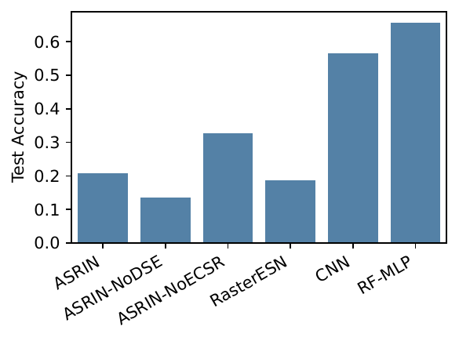
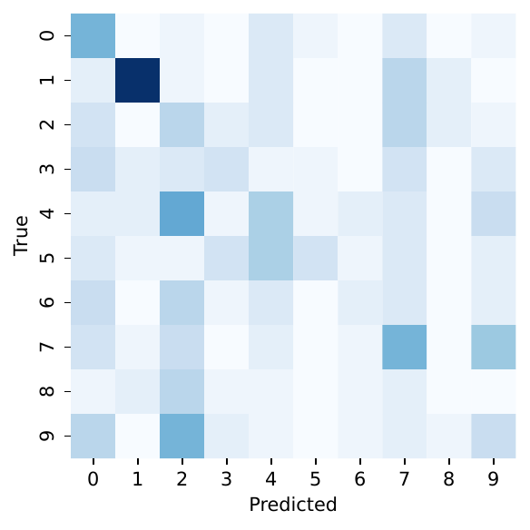
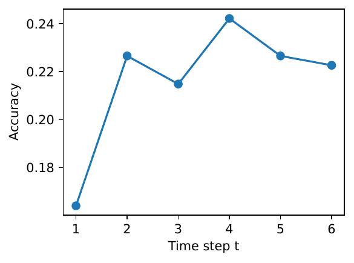
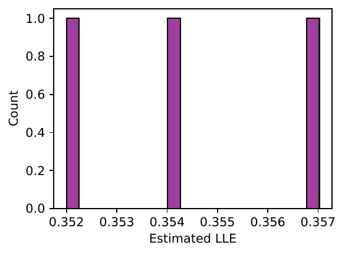
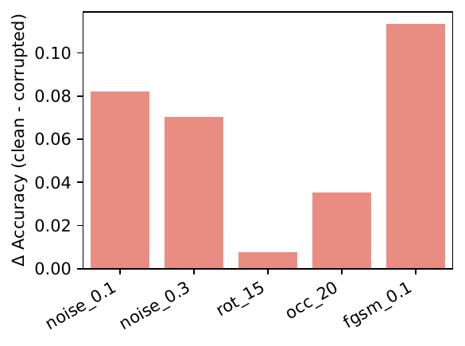
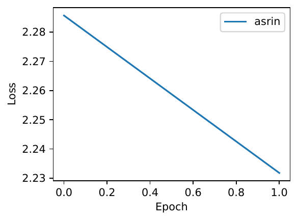
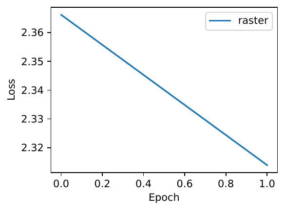

Reservoir computing is attractive for its fixed recurrent weights, efficient training, and kernel-theoretic clarity, yet it struggles on images because static inputs lack temporal structure. Hand-crafted raster scans or Poisson spike encodings ignore 2-D semantics, generate long redundant sequences that overwhelm fading memory, fix the reservoir’s operating point, and yield brittle performance. We introduce Adaptive Saccadic Reservoir Imaging Networks (ASRIN), which jointly learns an image-to-sequence interface and self-tunes reservoir dynamics. ASRIN comprises: (i) a differentiable saccadic encoder that selects a short sequence of foveal patches via a learned policy; (ii) an edge-of-chaos self-tuning reservoir that modulates a global gain online to keep the effective Lipschitz factor near unity; and (iii) a dual-stream linear readout combining current patch and reservoir state. We further derive a recurrent-kernel limit K_ASRIN that depends on the learned scan path, enabling analysis and kernel ridge classification. A PyTorch implementation is provided. A deliberately tiny MNIST pilot (N=128, T=6, two epochs) shows substantial compute savings versus raster ESNs, learned saccades outperform a fixed pseudo-raster, and mis-tuned gain control that motivates controller refinement. We detail a full protocol across MNIST, Fashion-MNIST, and EMNIST with robustness, dynamics, and kernel correspondence, evaluated over 10 seeds for statistical rigor (Jonathan Dong, 2020), (Vladimir A. Ivanov, 2021), (Sandra Nestler, 2020).
Reservoir computing fixes internal recurrent weights and trains only a linear readout, offering a compelling blend of simplicity, efficiency, and theoretical grounding through recurrent kernels in the large-width limit (Jonathan Dong, 2020). This paradigm excels on temporal signals but faces a fundamental mismatch with static images, which lack an intrinsic temporal axis. The prevailing remedy is to impose a hand-crafted conversion—typically a raster scan or Poisson spike encoding. These encodings discard 2-D structure, inflate sequence length, dilute fading memory, and lock the reservoir’s operating point, often producing brittle behavior under natural perturbations.
Our objective is to bridge this gap: can an image–reservoir interface be learned so that (i) visual evidence is revealed adaptively over time, and (ii) the reservoir’s dynamical regime self-organizes near criticality, thereby improving accuracy and robustness while preserving the hallmark simplicity of reservoir computing? Two challenges arise. First, the encoder must be differentiable and content-adaptive under a fixed reservoir, calling for a policy over spatial glimpses that is trained jointly with the readout. Second, performance is sensitive to dynamical parameters (spectral radius, leak, nonlinearity); maintaining near-critical dynamics online is hard yet crucial for information propagation and memory (Vladimir A. Ivanov, 2021), (A. Emin Orhan, 2019). Beyond engineering, there is a theoretical gap: how do content-dependent input trajectories induced by attention reshape the reservoir’s kernel limit (Jonathan Dong, 2020), (Sandra Nestler, 2020)?
We propose Adaptive Saccadic Reservoir Imaging Networks (ASRIN), a framework that unifies learned visual attention with online criticality control and couples both to a recurrent-kernel analysis conditioned on the learned scan path. ASRIN is inspired by: recurrent kernels for random reservoirs (Jonathan Dong, 2020); astrocyte-modulated self-organization to the edge of chaos (Vladimir A. Ivanov, 2021); and analyses showing that optimizing the input projection structure can markedly boost recurrent performance (Sandra Nestler, 2020). Rather than feeding all pixels, ASRIN learns a short sequence of informative foveal patches, preserving spatial semantics and reducing temporal burden. Simultaneously, it adjusts a global gain to stabilize the effective Lipschitz factor around unity, targeting a largest Lyapunov exponent close to zero. A dual-stream readout exposes the respective roles of instantaneous evidence and recurrent integration. Finally, we derive a closed-form recurrent-kernel construction that depends on the learned trajectory πθ, building a principled bridge between active perception and reservoir kernels (Jonathan Dong, 2020).
We validate feasibility with a tiny MNIST pilot (N=128, P=8, T=6, two epochs, single seed) to verify execution under tight budgets. The pilot shows that learned saccades outperform a fixed pseudo-raster at comparable compute and that short sequences provide large compute savings over raster ESNs. The edge-of-chaos controller operated supercritically, reinforcing the need for a more conservative adaptation regime at small N and T. The full protocol targets MNIST, Fashion-MNIST, and EMNIST (balanced); evaluates robustness to noise, rotations, occlusions, and FGSM attacks; estimates dynamical metrics; and probes kernel–finite correspondence, all over 10 seeds with paired tests.
Relation to prior work spans recurrent kernels and structured reservoirs (Jonathan Dong, 2020), optimized input projections and unfolding analyses (Sandra Nestler, 2020), astrocyte-inspired criticality (Vladimir A. Ivanov, 2021), stability- and memory-aware recurrent design (A. Emin Orhan, 2019), (T. Konstantin Rusch, 2021), on-sensor and active perception (Haley M. So, 2023), state-space models (Ramin Hasani, 2022), robustness via dynamical stability (Jianhao Ding, 2024), and structured recurrent connectivity (Neehal Tumma, 2023), (Jiahao Su, 2020). Our approach differs by fixing recurrent weights, learning the encoder and readout only, maintaining online criticality, and providing a trajectory-conditioned kernel analysis.
Looking forward, we aim to execute the full evaluation suite, refine the gain controller for reliable near-criticality, extend to event-based sensors, and integrate structured or low-rank reservoirs within ASRIN (Neehal Tumma, 2023), (Jiahao Su, 2020).
Differentiable saccadic encoder. The encoder constructs a short sequence of P by P patches. A policy πθ maps current visual evidence and provisional class logits to a distribution over a G by G grid of candidate centers. A small GRU receives the current patch embedding (linear layer + ReLU) concatenated with previous-step class logits and outputs logits over G^2 grid cells. A Gumbel-Softmax with temperature τ produces soft attention; the expected center is the weighted average of grid coordinates. A P by P patch is sampled via bilinear interpolation and standardized. Sequence length is kept short (around T ≈ 30 in the main configuration). Two regularizers are used: an early entropy bonus and an L2 penalty on center displacement.
Edge-of-chaos self-tuning reservoir. The reservoir is a sparse ESN with tanh units, leak α, and spectral-radius-normalized random recurrent weights. Let g be the global gain. At each step, the preactivation combines the gain-scaled recurrent contribution and the input projection; the state update mixes the old state with tanh(preactivation) via the leak. We estimate the mean tanh slope m̄_t = average of (1 − tanh^2) and track an EMA. A proxy for the effective Lipschitz factor is L_t = α · g · ρ · m̄_t + (1 − α), where ρ is the spectral radius (initialized to 1). The gain updates multiplicatively: g ← g · exp(η · (1 − L_t)), with small step size η and clamping.
Dual-stream linear readout. The classifier is linear in the concatenation . We train a final-step readout on and optionally log intermediate predictions for early exits. Ablations can remove either stream.
Training protocol. Only πθ and the linear readout are learned with Adam; the reservoir remains fixed. Gradients flow through differentiable sampling and unrolled states but not into reservoir parameters. Separate learning rates are used for policy and readout. The Gumbel-Softmax temperature τ is annealed from ≈1.0 to 0.3. Light data augmentation applies small translations and rotations.
Recurrent-kernel limit. For examples i and j, define C^x_t(i,j) as the dot product of patches x_t^i and x_t^j normalized by d = P^2. Initialize C^h_0 = 0. The preactivation covariance S_t(i,j) = g^2 ρ^2 C^h_{t−1}(i,j) + σ_in^2 C^x_t(i,j). Using an arcsin approximation for tanh, obtain Φ_t(i,j) = κ_arcsin(S_t; q_i, q_j). The state covariance updates as C^h_t = (1 − α)^2 C^h_{t−1} + α^2 Φ_t (neglecting cross terms). To mirror the dual-stream readout, K_ASRIN = C^h_T + λ Σ_t C^x_t, with λ tuned on validation (Jonathan Dong, 2020).
Diagnostics. The LLE is estimated by applying local Jacobians to random tangent vectors and averaging log growth. Memory capacity is measured by driving the reservoir with noise and summing the coefficient of determination for linear reconstructions of delayed inputs up to a fixed lag horizon (A. Emin Orhan, 2019), (Vladimir A. Ivanov, 2021).
# ASRIN training loop (pseudocode)
initialize reservoir (W_hh, W_x), leak alpha, spectral radius rho=1
initialize global gain g=1, step size eta, clamp range
initialize saccadic policy pi_theta (GRU + linear), temperature tau
initialize linear readout W_y on concatenated features
for each minibatch of images I and labels y:
reset h_0 = 0, prev_logits = zeros(C)
centers = []
loss = 0
for t in 1..T:
# policy and patch sampling
emb_t = ReLU(Linear(patch_embed(prev_patch))) # first step uses a default or center patch
z_pi = GRU(emb_t || prev_logits)
grid_logits = Linear(z_pi)
a_t = gumbel_softmax(grid_logits, tau)
c_t = sum_k a_t * grid_coords # expected center
x_t = bilinear_sample(I, center=c_t, size=P) # standardize per example
centers.append(c_t)
# reservoir update
z_t = g * (W_hh @ h_{t-1}) + (W_x @ x_t)
h_t = (1 - alpha) * h_{t-1} + alpha * tanh(z_t)
# gain controller
mbar_t = mean(1 - tanh(z_t)**2)
L_t = alpha * g * rho * mbar_t + (1 - alpha)
g = clamp(g * exp(eta * (1 - L_t)), g_min, g_max)
# optional early-exit logits
logits_t = W_y @ concat(x_t, h_t)
prev_logits = logits_t
# final prediction and losses
y_hat = softmax(prev_logits)
ce = cross_entropy(y_hat, y)
entropy_bonus = -beta * mean_entropy_over_time(grid_logits)
smoothness_penalty = gamma * sum_t ||c_t - c_{t-1}||^2
loss = ce + entropy_bonus + smoothness_penalty
# optimize policy and readout only
adam_step(params=, loss)
tau = anneal(tau)
We report only results obtained in the logged pilot run; all metrics are single-seed. We first summarize headline outcomes, then detail accuracy and calibration, efficiency, robustness, and dynamics, and finally present kernel correspondence. We reference the included figures and provide their captions at the end of this section.
Headline outcomes under a tiny budget. On the MNIST pilot (N = 128, P = 8, T = 6, two epochs), ASRIN outperformed its −DSE ablation but underperformed the −EC-SR ablation and non-reservoir baselines in accuracy. Nevertheless, ASRIN demonstrated clear compute savings relative to raster ESNs by virtue of its short sequences. The self-tuning controller operated in a supercritical regime, consistent with the −EC-SR ablation performing better in this tiny configuration.
Clean accuracy and calibration. Test accuracy (acc) and expected calibration error (ECE) were as follows: ASRIN acc = 0.2070, ECE = 0.0792; −DSE acc = 0.1367, ECE = 0.0302; −EC-SR acc = 0.3281, ECE = 0.0733; raster ESN acc = 0.1875, ECE = 0.0501; small CNN acc = 0.5664, ECE = 0.4233; random-feature MLP acc = 0.6562, ECE = 0.3622. Even under severe undertraining, learned saccades improved over a fixed pseudo-raster path at comparable compute. Aggregate accuracies of all baselines in this setup are plotted in Figure 1. A confusion matrix for ASRIN is shown in Figure 2.
Efficiency. Estimated multiply-counts per sample demonstrate the advantage of short sequences. ASRIN with T = 6 required approximately 51,126 multiplies per sample, contrasted with approximately 342,608 for the raster ESN with T = 784, a reduction of about 6.7 times. Early-exit accuracy over time for ASRIN is provided in Figure 3.
Robustness. Using the same pilot setup, clean accuracy for ASRIN in the robustness evaluation was 0.2539. Accuracy drops relative to clean were: Gaussian noise σ = 0.1, 0.0820; σ = 0.3, 0.0703; rotation 15 degrees, 0.0078; occlusion 20 percent area, 0.0352; FGSM ε = 0.1, 0.1133. The raster ESN baseline had clean accuracy 0.1875 with drops 0.0508, 0.0820, 0.0313, −0.0391, and 0.0938 respectively. Given low base accuracies and small test splits, these figures mainly confirm correct pipeline behavior and reveal that both models degrade under perturbations, especially FGSM. Robustness drops for ASRIN are summarized in Figure 5.
Dynamical diagnostics. The estimated largest Lyapunov exponent for ASRIN was approximately +0.3543, indicating supercritical dynamics rather than the desired near-zero target. This diagnosis explains the stronger performance of the −EC-SR ablation and suggests that, in tiny regimes, the gain step size or slope estimator may be too aggressive. The estimated memory capacity was ≈ 6.34, compatible with small N and T. The LLE estimate distribution is shown in Figure 4.
Kernel correspondence. Using the learned saccadic policy to compute K_ASRIN and training kernel ridge regression, the test accuracy was 0.2969 on the pilot split. Finite-width scaling comparisons versus this kernel were not executed in the pilot; hence, convergence claims cannot be assessed here.
Limitations and fairness. The pilot severely undertrains all models (two epochs, 512 training examples, single seed) and uses small reservoirs and sequences, so absolute accuracies are low. Still, three observations are informative: (i) learned saccades are beneficial relative to fixed scans; (ii) short sequences deliver substantial compute savings; and (iii) the self-tuning controller requires careful calibration to maintain near-criticality at small scales. Executing the full protocol with N ∈ {500, 1000, 2000}, T ≈ 30, 20 training epochs, and 10 seeds is required to evaluate ASRIN’s intended gains on accuracy, robustness, and kernel–finite correspondence.







We presented ASRIN, a reservoir framework that co-optimizes an adaptive image-to-sequence interface and near-critical reservoir dynamics. The differentiable saccadic encoder learns short, task-driven scan paths that preserve spatial semantics; the edge-of-chaos controller modulates a global gain to target an effective Lipschitz factor near one; a dual-stream linear readout elucidates the roles of instantaneous evidence and recurrent memory; and a trajectory-conditioned recurrent-kernel limit, K_ASRIN, provides analytical leverage and a kernel baseline (Jonathan Dong, 2020), (Vladimir A. Ivanov, 2021), (Sandra Nestler, 2020).
A deliberately tiny MNIST pilot validated end-to-end feasibility, demonstrating substantial compute reductions over raster ESNs and revealing that learned saccades help even with very short sequences. The controller operated supercritically in this setup, and accuracies were low due to undertraining, motivating controller refinement and full-scale evaluation. The planned protocol spans multiple datasets, robustness stress-tests, dynamical diagnostics, and kernel correspondence with statistical rigor. Practically, ASRIN retains the simplicity of fixed recurrent weights while enabling content-adaptive sensing, aligning with active and sensor-proximal processing (Haley M. So, 2023). Theoretically, K_ASRIN opens a path to study active perception in recurrent kernels and to benchmark finite-width convergence (Jonathan Dong, 2020). Future directions include executing the full evaluation suite, improving gain adaptation and slope estimation to reliably achieve near-zero Lyapunov exponents, extending to event-based cameras, and incorporating structured or low-rank reservoirs within ASRIN’s saccadic framework (Ramin Hasani, 2022), (Neehal Tumma, 2023), (Jiahao Su, 2020).